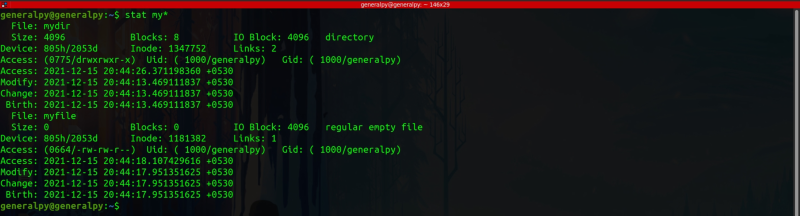
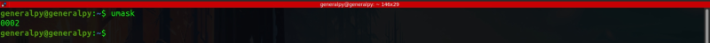
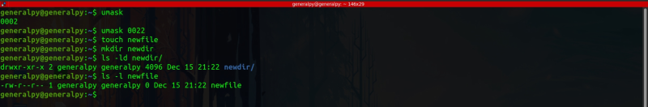

When we create a new file or directory there are some default permissions set automatically.

We can see that by default, new file and directory we created has permissions 0664 and 0775 respectively. Where these permissions came from??
Answer is from umask.
Let's calculate permissions from umask.
In linux, we assume that default file permissions are 0666 for files and 0777 for dirs. Now, subtract umask from these permissions. To get umask, just write umask command.

Here umask is 0002. Therefore our default permissions are 0664 and 0775 for files and dirs respectively.
default permission = 0666/0777 - umask.
We can change current session umask value by running umask and then writing value after it.
umask perms_mask
Note that umask values are valid only for that session.
To set permanent umask values, edit the .bashrc file.